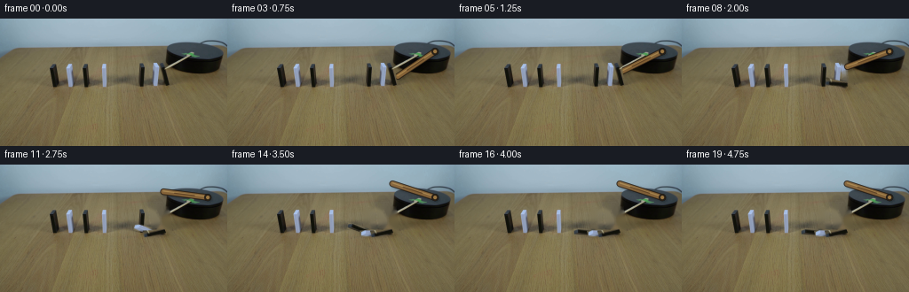
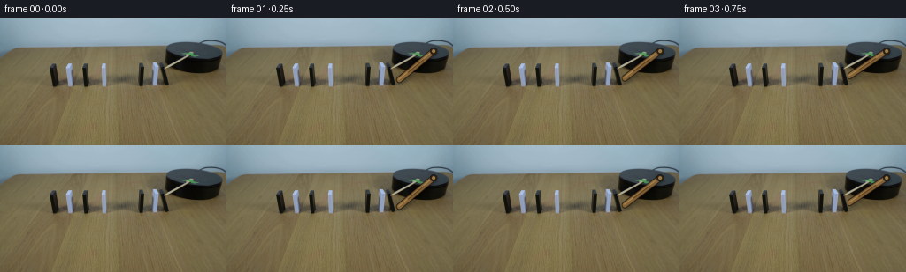
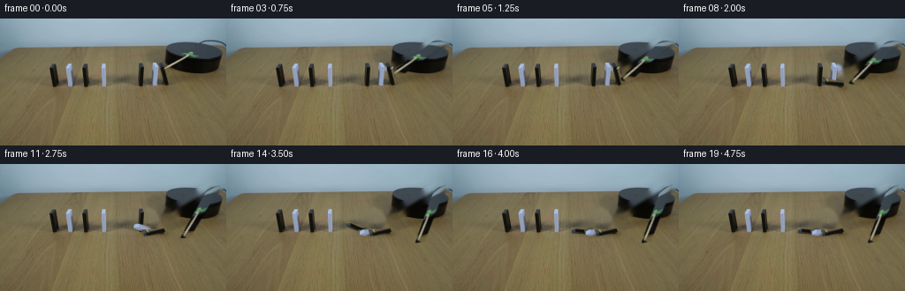
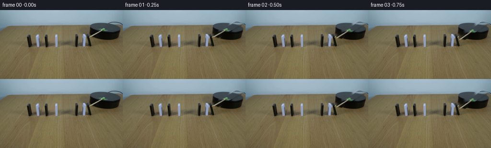
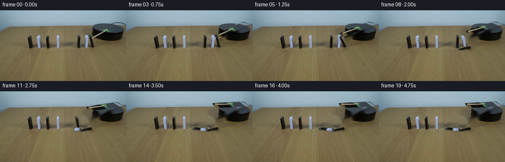
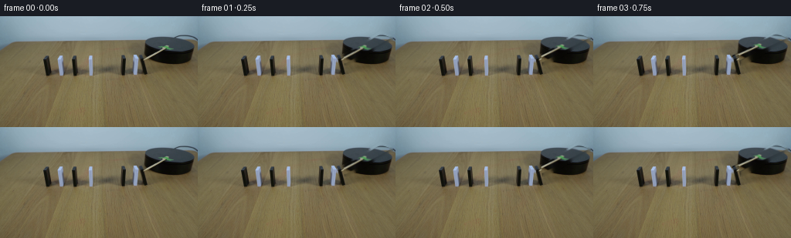

CODING AGENTS AS PIXEL WORLD MODELS
traex/GPT-5.6-Sol · 0050
点击播放 · 原生 RGB 像素
逐轮保存的候选
回放视频、检查图与代码变化。
每份候选均可单独播放。实际图片检查记录在下方工具轨迹中。
候选 01播放与检查图
点击播放 · 原生 RGB 像素


展开代码变化
--- 上一保存版本
+++ 本次保存版本
@@ -0,0 +1,164 @@
+from pathlib import Path
+import math
+import cv2
+import numpy as np
+from PIL import Image
+import artifact_io
+
+# Analytic 2-D reconstruction/animation of the photographed apparatus. The small
+# source cutouts retain the illumination and texture of the real dominoes.
+ROOT = Path(__file__).resolve().parent
+FIRST = np.asarray(Image.open(ROOT / "first_frame.png").convert("RGB"), dtype=np.uint8)
+H, W = FIRST.shape[:2]
+
+# The three pieces to the right of the deliberately large gap form the active row.
+# Each polygon hugs the photographed object; pivots are their table-contact points.
+DOMINOES = [
+ (np.array([[156,51],[163,50],[164,75],[158,77]], np.int32), (160,76)),
+ (np.array([[171,50],[178,48],[181,75],[174,77]], np.int32), (177,76)),
+ (np.array([[181,52],[188,50],[191,74],[185,77]], np.int32), (187,76)),
+]
+
+
+def soft_mask(poly, expand=0):
+ """Antialiased polygon mask at native resolution."""
+ ss = 4
+ p = poly * ss
+ m = np.zeros((H*ss, W*ss), np.uint8)
+ cv2.fillPoly(m, [p], 255, lineType=cv2.LINE_AA)
+ if expand:
+ k = 2 * expand * ss + 1
+ m = cv2.dilate(m, np.ones((k,k), np.uint8))
+ return cv2.resize(m, (W,H), interpolation=cv2.INTER_AREA)
+
+
+obj_masks = [soft_mask(p) for p,_ in DOMINOES]
+# Slightly larger masks are used only to restore exposed tabletop and cast shadow.
+restore_masks = []
+for (p,_), m in zip(DOMINOES, obj_masks):
+ r = cv2.dilate(m, np.ones((5,5),np.uint8))
+ # Include the compact original contact shadow without touching neighboring pieces.
+ restore_masks.append(r)
+
+
+def ease(x):
+ x = np.clip(x, 0.0, 1.0)
+ return x*x*(3.0-2.0*x)
+
+
+def fall_angle(frame, start, duration=4.2):
+ # Brief accelerating tip, then a cushioned impact at 88 degrees.
+ u = (frame-start)/duration
+ return 88.0 * ease(u)
+
+
+def affine_about(pivot, degrees):
+ return cv2.getRotationMatrix2D((float(pivot[0]),float(pivot[1])), degrees, 1.0)
+
+
+def alpha_over(dst, src, alpha):
+ a = alpha.astype(np.float32)[...,None] / 255.0
+ return np.clip(src.astype(np.float32)*a + dst.astype(np.float32)*(1-a),0,255).astype(np.uint8)
+
+
+def draw_arm(frame, index):
+ """Draw the clockwise wooden striker, attached to the black platform."""
+ # In image coordinates, increasing angle is clockwise. It meets x=187,y=56.
+ if index <= 7:
+ u = ease(index/7.0)
+ theta = 139.0 + (157.0-139.0)*u
+ else:
+ u = ease((index-7)/6.0)
+ theta = 157.0 + (198.0-157.0)*u
+ theta = min(theta,198.0)
+ pivot = np.array([234.0, 37.0])
+ length = 50.5
+ rad = math.radians(theta)
+ end = pivot + length*np.array([math.cos(rad), math.sin(rad)])
+
+ # Draw oversampled for clean photographic-scale edges.
+ ss=4
+ lay=np.zeros((H*ss,W*ss,3),np.uint8)
+ a=np.zeros((H*ss,W*ss),np.uint8)
+ P=tuple(np.rint(pivot*ss).astype(int)); E=tuple(np.rint(end*ss).astype(int))
+ # Soft, displaced table shadow under the wood.
+ sh=np.zeros_like(a)
+ cv2.line(sh,(P[0]+2*ss,P[1]+2*ss),(E[0]+2*ss,E[1]+2*ss),125,7*ss,cv2.LINE_AA)
+ sh=cv2.GaussianBlur(sh,(0,0),1.2*ss)
+ sh=cv2.resize(sh,(W,H),interpolation=cv2.INTER_AREA)
+ dark=(frame.astype(np.float32)*0.58).astype(np.uint8)
+ frame=alpha_over(frame,dark,sh)
+
+ # Dark lower rim, warm wooden body, and a narrow grain highlight.
+ cv2.line(lay,P,E,(49,35,21),7*ss,cv2.LINE_AA); cv2.line(a,P,E,235,7*ss,cv2.LINE_AA)
+ cv2.line(lay,P,E,(137,101,56),5*ss,cv2.LINE_AA)
+ # offset highlight parallel to stick
+ normal=np.array([-math.sin(rad),math.cos(rad)])*0.75*ss
+ P2=tuple(np.rint(pivot*ss+normal).astype(int)); E2=tuple(np.rint(end*ss+normal).astype(int))
+ cv2.line(lay,P2,E2,(174,137,78),1*ss,cv2.LINE_AA)
+ # two subtle dark grain segments
+ q1=pivot*.70+end*.30; q2=pivot*.25+end*.75
+ cv2.line(lay,tuple(np.rint(q1*ss).astype(int)),tuple(np.rint(q2*ss).astype(int)),(104,72,38),1*ss,cv2.LINE_AA)
+ lay=cv2.resize(lay,(W,H),interpolation=cv2.INTER_AREA)
+ a=cv2.resize(a,(W,H),interpolation=cv2.INTER_AREA)
+ frame=alpha_over(frame,lay,a)
+
+ # Metal/wood axle on the black platform.
+ axle=np.zeros((H*ss,W*ss,3),np.uint8); aa=np.zeros((H*ss,W*ss),np.uint8)
+ cv2.circle(axle,P,4*ss,(38,31,23),-1,cv2.LINE_AA); cv2.circle(aa,P,4*ss,245,-1,cv2.LINE_AA)
+ cv2.circle(axle,P,2*ss,(154,119,67),-1,cv2.LINE_AA)
+ axle=cv2.resize(axle,(W,H),interpolation=cv2.INTER_AREA); aa=cv2.resize(aa,(W,H),interpolation=cv2.INTER_AREA)
+ return alpha_over(frame,axle,aa)
+
+
+def make_frame(i):
+ if i == 0:
+ return FIRST.copy() # generation contract: exact source frame
+
+ # The rightmost piece is struck first. Contact propagates left, and then stops
+ # at the prominent gap before the untouched second row.
+ starts = [11.0, 8.0, 5.0] # left, middle, right
+ angles = [fall_angle(i,s) for s in starts]
+ moving = [j for j,a in enumerate(angles) if a > 0.01]
+
+ frame = FIRST.copy()
+ if moving:
+ # Restore only areas vacated in this frame, preserving all untouched pixels.
+ combined=np.zeros((H,W),np.uint8)
+ for j in moving: combined=np.maximum(combined,restore_masks[j])
+ frame=cv2.inpaint(cv2.cvtColor(frame,cv2.COLOR_RGB2BGR),combined,4,cv2.INPAINT_TELEA)
+ frame=cv2.cvtColor(frame,cv2.COLOR_BGR2RGB)
+
+ frame=draw_arm(frame,i)
+
+ # Put stationary domino cutouts back in front of the striker at the instant of contact.
+ # Moving objects are then transformed rigidly about their lower edge.
+ for j in range(3):
+ a=angles[j]
+ if a <= 0.01:
+ # Original is already present; re-overlay its cutout only where the arm crossed it.
+ frame=alpha_over(frame,FIRST,obj_masks[j])
+ continue
+ M=affine_about(DOMINOES[j][1],a)
+ src=cv2.warpAffine(FIRST,M,(W,H),flags=cv2.INTER_LINEAR,borderMode=cv2.BORDER_REFLECT)
+ mask=cv2.warpAffine(obj_masks[j],M,(W,H),flags=cv2.INTER_LINEAR,borderMode=cv2.BORDER_CONSTANT)
+
+ # Low soft contact shadow follows the falling slab on the table.
+ p=np.array(DOMINOES[j][1],float)
+ top=np.array([(DOMINOES[j][0][:,0].mean()),DOMINOES[j][0][:,1].min()],float)
+ th=math.radians(a)
+ v=top-p
+ R=np.array([[math.cos(th),math.sin(th)],[-math.sin(th),math.cos(th)]])
+ tp=p+R@v
+ sm=np.zeros((H,W),np.uint8)
+ cv2.line(sm,tuple(np.rint(p+[1,2]).astype(int)),tuple(np.rint(tp+[1,2]).astype(int)),105,4,cv2.LINE_AA)
+ sm=cv2.GaussianBlur(sm,(0,0),1.5)
+ frame=alpha_over(frame,(frame.astype(np.float32)*0.62).astype(np.uint8),sm)
+ frame=alpha_over(frame,src,mask)
+
+ return frame
+
+
+frames=np.stack([make_frame(i) for i in range(20)]).astype(np.uint8)
+assert frames.shape==(20,144,256,3) and np.array_equal(frames[0],FIRST)
+artifact_io.save(frames,ROOT)
候选 02播放与检查图
点击播放 · 原生 RGB 像素


展开代码变化
--- 上一保存版本
+++ 本次保存版本
@@ -40,6 +40,16 @@
# Include the compact original contact shadow without touching neighboring pieces.
restore_masks.append(r)
+# The diagonal photographed striker runs from the axle at upper-right to the
+# first domino. Keeping this as a source cutout gives the moving arm the same
+# grain, highlight and focus softness as the source photograph.
+ARM_PIVOT = (243, 27)
+ARM_POLY = np.array([[237,23],[250,28],[191,62],[181,57]], np.int32)
+arm_mask = soft_mask(ARM_POLY)
+arm_restore = cv2.dilate(arm_mask, np.ones((5,5),np.uint8))
+_clean = cv2.inpaint(cv2.cvtColor(FIRST,cv2.COLOR_RGB2BGR),arm_restore,4,cv2.INPAINT_TELEA)
+CLEAN_ARM_BG = cv2.cvtColor(_clean,cv2.COLOR_BGR2RGB)
+
def ease(x):
x = np.clip(x, 0.0, 1.0)
@@ -63,52 +73,25 @@
def draw_arm(frame, index):
"""Draw the clockwise wooden striker, attached to the black platform."""
- # In image coordinates, increasing angle is clockwise. It meets x=187,y=56.
+ # Slow motor start, clear contact around frame 5, then a modest follow-through.
if index <= 7:
- u = ease(index/7.0)
- theta = 139.0 + (157.0-139.0)*u
+ delta = 15.0 * ease(index/7.0)
else:
- u = ease((index-7)/6.0)
- theta = 157.0 + (198.0-157.0)*u
- theta = min(theta,198.0)
- pivot = np.array([234.0, 37.0])
- length = 50.5
- rad = math.radians(theta)
- end = pivot + length*np.array([math.cos(rad), math.sin(rad)])
+ delta = 15.0 + 24.0 * ease((index-7)/7.0)
+ delta = min(delta,39.0)
+ M = affine_about(ARM_PIVOT, delta)
+ stick = cv2.warpAffine(FIRST,M,(W,H),flags=cv2.INTER_LINEAR,
+ borderMode=cv2.BORDER_REFLECT)
+ mask = cv2.warpAffine(arm_mask,M,(W,H),flags=cv2.INTER_LINEAR,
+ borderMode=cv2.BORDER_CONSTANT)
- # Draw oversampled for clean photographic-scale edges.
- ss=4
- lay=np.zeros((H*ss,W*ss,3),np.uint8)
- a=np.zeros((H*ss,W*ss),np.uint8)
- P=tuple(np.rint(pivot*ss).astype(int)); E=tuple(np.rint(end*ss).astype(int))
- # Soft, displaced table shadow under the wood.
- sh=np.zeros_like(a)
- cv2.line(sh,(P[0]+2*ss,P[1]+2*ss),(E[0]+2*ss,E[1]+2*ss),125,7*ss,cv2.LINE_AA)
- sh=cv2.GaussianBlur(sh,(0,0),1.2*ss)
- sh=cv2.resize(sh,(W,H),interpolation=cv2.INTER_AREA)
- dark=(frame.astype(np.float32)*0.58).astype(np.uint8)
- frame=alpha_over(frame,dark,sh)
-
- # Dark lower rim, warm wooden body, and a narrow grain highlight.
- cv2.line(lay,P,E,(49,35,21),7*ss,cv2.LINE_AA); cv2.line(a,P,E,235,7*ss,cv2.LINE_AA)
- cv2.line(lay,P,E,(137,101,56),5*ss,cv2.LINE_AA)
- # offset highlight parallel to stick
- normal=np.array([-math.sin(rad),math.cos(rad)])*0.75*ss
- P2=tuple(np.rint(pivot*ss+normal).astype(int)); E2=tuple(np.rint(end*ss+normal).astype(int))
- cv2.line(lay,P2,E2,(174,137,78),1*ss,cv2.LINE_AA)
- # two subtle dark grain segments
- q1=pivot*.70+end*.30; q2=pivot*.25+end*.75
- cv2.line(lay,tuple(np.rint(q1*ss).astype(int)),tuple(np.rint(q2*ss).astype(int)),(104,72,38),1*ss,cv2.LINE_AA)
- lay=cv2.resize(lay,(W,H),interpolation=cv2.INTER_AREA)
- a=cv2.resize(a,(W,H),interpolation=cv2.INTER_AREA)
- frame=alpha_over(frame,lay,a)
-
- # Metal/wood axle on the black platform.
- axle=np.zeros((H*ss,W*ss,3),np.uint8); aa=np.zeros((H*ss,W*ss),np.uint8)
- cv2.circle(axle,P,4*ss,(38,31,23),-1,cv2.LINE_AA); cv2.circle(aa,P,4*ss,245,-1,cv2.LINE_AA)
- cv2.circle(axle,P,2*ss,(154,119,67),-1,cv2.LINE_AA)
- axle=cv2.resize(axle,(W,H),interpolation=cv2.INTER_AREA); aa=cv2.resize(aa,(W,H),interpolation=cv2.INTER_AREA)
- return alpha_over(frame,axle,aa)
+ # A restrained soft shadow grounds the lifted stick against the dark platform.
+ sh = cv2.warpAffine(arm_mask,np.array([[1,0,1.5],[0,1,2.0]],np.float32),
+ (W,H),flags=cv2.INTER_LINEAR)
+ sh = cv2.GaussianBlur(sh,(0,0),1.25)
+ frame = alpha_over(frame,(frame.astype(np.float32)*.72).astype(np.uint8),
+ (sh.astype(np.float32)*.35).astype(np.uint8))
+ return alpha_over(frame,stick,mask)
def make_frame(i):
@@ -121,7 +104,9 @@
angles = [fall_angle(i,s) for s in starts]
moving = [j for j,a in enumerate(angles) if a > 0.01]
- frame = FIRST.copy()
+ # Every post-start frame first reveals what was behind the source-position arm.
+ # This prevents the common double-arm artifact during rigid rotation.
+ frame = CLEAN_ARM_BG.copy()
if moving:
# Restore only areas vacated in this frame, preserving all untouched pixels.
combined=np.zeros((H,W),np.uint8)
候选 03播放与检查图
点击播放 · 原生 RGB 像素


展开代码变化
--- 上一保存版本
+++ 本次保存版本
@@ -75,11 +75,12 @@
"""Draw the clockwise wooden striker, attached to the black platform."""
# Slow motor start, clear contact around frame 5, then a modest follow-through.
if index <= 7:
- delta = 15.0 * ease(index/7.0)
+ delta = 12.0 * ease(index/7.0)
else:
- delta = 15.0 + 24.0 * ease((index-7)/7.0)
- delta = min(delta,39.0)
- M = affine_about(ARM_PIVOT, delta)
+ delta = 12.0 + 16.0 * ease((index-7)/7.0)
+ delta = min(delta,28.0)
+ # OpenCV's image-coordinate sign is opposite the visible clock direction.
+ M = affine_about(ARM_PIVOT, -delta)
stick = cv2.warpAffine(FIRST,M,(W,H),flags=cv2.INTER_LINEAR,
borderMode=cv2.BORDER_REFLECT)
mask = cv2.warpAffine(arm_mask,M,(W,H),flags=cv2.INTER_LINEAR,
@@ -100,7 +101,7 @@
# The rightmost piece is struck first. Contact propagates left, and then stops
# at the prominent gap before the untouched second row.
- starts = [11.0, 8.0, 5.0] # left, middle, right
+ starts = [10.0, 7.0, 4.0] # left, middle, right
angles = [fall_angle(i,s) for s in starts]
moving = [j for j,a in enumerate(angles) if a > 0.01]
可观测工具轨迹
实际执行的命令与返回图片。
命令 1exit 0
/bin/bash -lc "cat GENERATION_RULES.md && printf '\\n---PROMPT---\\n' && cat prompt.txt"
命令 2exit 1
/bin/bash -lc "find . -maxdepth 2 -type f -printf '%p %s bytes\\n' | sort && printf '\\nTOOLS\\n' && command -v ffmpeg && command -v python3"
命令 3exit 0
/bin/bash -lc "python3 - <<'PY'
from PIL import Image
import numpy as np
im=np.asarray(Image.open('first_frame.png').convert('RGB'))
print(im.shape, im.min(axis=(0,1)), im.max(axis=(0,1)), im.mean(axis=(0,1)), im.std(axis=(0,1)))
# kmeans cv2
import cv2
Z=im.reshape(-1,3).astype(np.float32)
crit=(cv2.TERM_CRITERIA_EPS+cv2.TERM_CRITERIA_MAX_ITER,50,.2)
_,lab,cen=cv2.kmeans(Z,12,None,crit,5,cv2.KMEANS_PP_CENTERS)
for i in np.argsort(np.bincount(lab.ravel()))[::-1]: print(np.bincount(lab.ravel())[i], np.round(cen[i]).astype(int))
# colors by 16x9 tiles averages
for y in range(9):
print(' '.join('%02x%02x%02x'%tuple(im[y*16:(y+1)*16,x*16:(x+1)*16].mean((0,1)).astype(int)) for x in range(16)))
PY"命令 4exit 0
/bin/bash -lc "python3 - <<'PY'
from PIL import Image,ImageFilter
import numpy as np, cv2
im=np.asarray(Image.open('first_frame.png').convert('RGB'))
# print ascii darkness relative to local broad blur, central/lower from rows every 2x2
v=cv2.cvtColor(im,cv2.COLOR_RGB2GRAY).astype(float)
# local anomaly against blur
b=cv2.GaussianBlur(v,(0,0),7)
d=v-b
for mode,a in [('gray',v),('detail',d)]:
print('\\n',mode)
for y in range(0,144,3):
s=''
for x in range(0,256,3):
z=np.mean(a[y:y+3,x:x+3])
if mode=='gray': chars='@%#*+=-:. '; z=np.clip((z-10)/180*9,0,9); s+=chars[int(z)]
else:
s+= '@' if z < -45 else '#' if z < -25 else '+' if z < -12 else ' ' if z<12 else '.' if z<25 else ':' if z<45 else '"'!'"'
print(s)
PY"命令 5exit 0
/bin/bash -lc "python3 - <<'PY'
import cv2,numpy as np
im=cv2.imread('first_frame.png'); rgb=im[:,:,::-1]
g=cv2.cvtColor(im,cv2.COLOR_BGR2GRAY)
for th in [25,35,45,60,75,90,110,130,150,180]:
m=(g<th).astype(np.uint8)
n,l,st,cen=cv2.connectedComponentsWithStats(m,8)
print('\\nTH',th)
for x,y,w,h,a in sorted(st[1:].tolist(), key=lambda q:q[4],reverse=True)[:20]:
if a>=4: print((x,y,w,h,a))
# sample vertical runs around known positions
for x in range(0,256,4):
vals=[]; on=False
for y in range(35,90):
if g[y,x]<70 and not on: st=y;on=True
if on and (g[y,x]>=70 or y==89):
en=y if y==89 else y-1
if en-st>=2: vals.append((st,en))
on=False
if vals: print(x,vals)
PY"命令 6exit 0
/bin/bash -lc "python3 - <<'PY'
import cv2,numpy as np
im=cv2.imread('first_frame.png'); g=cv2.cvtColor(im,cv2.COLOR_BGR2GRAY)
# gradient magnitude, render x40-255 y25-85 each 2px max
sx=cv2.Sobel(g,cv2.CV_32F,1,0);sy=cv2.Sobel(g,cv2.CV_32F,0,1); m=np.hypot(sx,sy)
for y in range(24,88,2):
s=''
for x in range(40,256,2):
z=m[y:y+2,x:x+2].max()
s+= ' ' if z<25 else '.' if z<60 else '+' if z<120 else '#' if z<250 else '@'
print(f'{y:3}',s)
PY"命令 7exit 0
/bin/bash -lc "python3 - <<'PY'
from PIL import Image
import numpy as np
im=np.asarray(Image.open('first_frame.png'))
# print pixel rgb each x step2 for y specified where anomaly from table bg approximated median y80-100 per x
for y in [30,35,40,45,50,55,60,65,70,75,80]:
print('\\ny=',y)
for x in range(0,256,4):
r,g,b=im[y,x]; print(f'{x:3}:{r:02x}{g:02x}{b:02x}',end=' ')
if x%32==28:print()
PY"命令 8exit 0
/bin/bash -lc "python3 - <<'PY'
import cv2,numpy as np
im=cv2.imread('first_frame.png'); g=cv2.cvtColor(im,cv2.COLOR_BGR2GRAY)
for y in range(20,82):
runs=[];on=False
for x in range(170,256):
if g[y,x]<55 and not on: st=x;on=True
if on and (g[y,x]>=55 or x==255):
en=x if x==255 and g[y,x]<55 else x-1
if en-st>=1:runs.append((st,en))
on=False
if runs: print(y,runs)
PY"命令 9exit 0
/bin/bash -lc "python3 - <<'PY'
from PIL import Image
import numpy as np
im=np.array(Image.open('first_frame.png'))
for y in range(24,80):
s=''
for x in range(170,256):
r,g,b=map(int,im[y,x]); v=(r+g+b)/3
if v<25:c='K'
elif v<50:c='k'
elif v<75:c='d'
elif b>r+25 and v>90:c='W'
elif g>r+20:c='G'
elif v>150:c='H'
elif v>115:c='h'
elif r>g+8:c='t'
else:c='.'
s+=c
print(f'{y:02} {s}')
PY"命令 10exit 0
/bin/bash -lc "sed -n '1,240p' artifact_io.py"
命令 11exit 0
/bin/bash -lc "python3 - <<'PY'
import cv2
im=cv2.imread('first_frame.png'); g=cv2.cvtColor(im,cv2.COLOR_BGR2GRAY)
for th in [70,90,110,130]:
print('TH',th)
for y in range(15,77):
runs=[];on=False
for x in range(130,256):
q=g[y,x]<th
if q and not on:st=x;on=1
if on and (not q or x==255):
en=x if q and x==255 else x-1
if en-st>=2:runs.append((st,en))
on=0
if runs:print(y,runs)
PY"命令 12exit 0
/bin/bash -lc "cat > generate.py <<'PY'
from pathlib import Path
import math
import cv2
import numpy as np
from PIL import Image
import artifact_io
# Analytic 2-D reconstruction/animation of the photographed apparatus. The small
# source cutouts retain the illumination and texture of the real dominoes.
ROOT = Path(__file__).resolve().parent
FIRST = np.asarray(Image.open(ROOT / \"first_frame.png\").convert(\"RGB\"), dtype=np.uint8)
H, W = FIRST.shape[:2]
# The three pieces to the right of the deliberately large gap form the active row.
# Each polygon hugs the photographed object; pivots are their table-contact points.
DOMINOES = [
(np.array([[156,51],[163,50],[164,75],[158,77]], np.int32), (160,76)),
(np.array([[171,50],[178,48],[181,75],[174,77]], np.int32), (177,76)),
(np.array([[181,52],[188,50],[191,74],[185,77]], np.int32), (187,76)),
]
def soft_mask(poly, expand=0):
\"\"\"Antialiased polygon mask at native resolution.\"\"\"
ss = 4
p = poly * ss
m = np.zeros((H*ss, W*ss), np.uint8)
cv2.fillPoly(m, [p], 255, lineType=cv2.LINE_AA)
if expand:
k = 2 * expand * ss + 1
m = cv2.dilate(m, np.ones((k,k), np.uint8))
return cv2.resize(m, (W,H), interpolation=cv2.INTER_AREA)
obj_masks = [soft_mask(p) for p,_ in DOMINOES]
# Slightly larger masks are used only to restore exposed tabletop and cast shadow.
restore_masks = []
for (p,_), m in zip(DOMINOES, obj_masks):
r = cv2.dilate(m, np.ones((5,5),np.uint8))
# Include the compact original contact shadow without touching neighboring pieces.
restore_masks.append(r)
def ease(x):
x = np.clip(x, 0.0, 1.0)
return x*x*(3.0-2.0*x)
def fall_angle(frame, start, duration=4.2):
# Brief accelerating tip, then a cushioned impact at 88 degrees.
u = (frame-start)/duration
return 88.0 * ease(u)
def affine_about(pivot, degrees):
return cv2.getRotationMatrix2D((float(pivot[0]),float(pivot[1])), degrees, 1.0)
def alpha_over(dst, src, alpha):
a = alpha.astype(np.float32)[...,None] / 255.0
return np.clip(src.astype(np.float32)*a + dst.astype(np.float32)*(1-a),0,255).astype(np.uint8)
def draw_arm(frame, index):
\"\"\"Draw the clockwise wooden striker, attached to the black platform.\"\"\"
# In image coordinates, increasing angle is clockwise. It meets x=187,y=56.
if index <= 7:
u = ease(index/7.0)
theta = 139.0 + (157.0-139.0)*u
else:
u = ease((index-7)/6.0)
theta = 157.0 + (198.0-157.0)*u
theta = min(theta,198.0)
pivot = np.array([234.0, 37.0])
length = 50.5
rad = math.radians(theta)
end = pivot + length*np.array([math.cos(rad), math.sin(rad)])
# Draw oversampled for clean photographic-scale edges.
ss=4
lay=np.zeros((H*ss,W*ss,3),np.uint8)
a=np.zeros((H*ss,W*ss),np.uint8)
P=tuple(np.rint(pivot*ss).astype(int)); E=tuple(np.rint(end*ss).astype(int))
# Soft, displaced table shadow under the wood.
sh=np.zeros_like(a)
cv2.line(sh,(P[0]+2*ss,P[1]+2*ss),(E[0]+2*ss,E[1]+2*ss),125,7*ss,cv2.LINE_AA)
sh=cv2.GaussianBlur(sh,(0,0),1.2*ss)
sh=cv2.resize(sh,(W,H),interpolation=cv2.INTER_AREA)
dark=(frame.astype(np.float32)*0.58).astype(np.uint8)
frame=alpha_over(frame,dark,sh)
# Dark lower rim, warm wooden body, and a narrow grain highlight.
cv2.line(lay,P,E,(49,35,21),7*ss,cv2.LINE_AA); cv2.line(a,P,E,235,7*ss,cv2.LINE_AA)
cv2.line(lay,P,E,(137,101,56),5*ss,cv2.LINE_AA)
# offset highlight parallel to stick
normal=np.array([-math.sin(rad),math.cos(rad)])*0.75*ss
P2=tuple(np.rint(pivot*ss+normal).astype(int)); E2=tuple(np.rint(end*ss+normal).astype(int))
cv2.line(lay,P2,E2,(174,137,78),1*ss,cv2.LINE_AA)
# two subtle dark grain segments
q1=pivot*.70+end*.30; q2=pivot*.25+end*.75
cv2.line(lay,tuple(np.rint(q1*ss).astype(int)),tuple(np.rint(q2*ss).astype(int)),(104,72,38),1*ss,cv2.LINE_AA)
lay=cv2.resize(lay,(W,H),interpolation=cv2.INTER_AREA)
a=cv2.resize(a,(W,H),interpolation=cv2.INTER_AREA)
frame=alpha_over(frame,lay,a)
# Metal/wood axle on the black platform.
axle=np.zeros((H*ss,W*ss,3),np.uint8); aa=np.zeros((H*ss,W*ss),np.uint8)
cv2.circle(axle,P,4*ss,(38,31,23),-1,cv2.LINE_AA); cv2.circle(aa,P,4*ss,245,-1,cv2.LINE_AA)
cv2.circle(axle,P,2*ss,(154,119,67),-1,cv2.LINE_AA)
axle=cv2.resize(axle,(W,H),interpolation=cv2.INTER_AREA); aa=cv2.resize(aa,(W,H),interpolation=cv2.INTER_AREA)
return alpha_over(frame,axle,aa)
def make_frame(i):
if i == 0:
return FIRST.copy() # generation contract: exact source frame
# The rightmost piece is struck first. Contact propagates left, and then stops
# at the prominent gap before the untouched second row.
starts = [11.0, 8.0, 5.0] # left, middle, right
angles = [fall_angle(i,s) for s in starts]
moving = [j for j,a in enumerate(angles) if a > 0.01]
frame = FIRST.copy()
if moving:
# Restore only areas vacated in this frame, preserving all untouched pixels.
combined=np.zeros((H,W),np.uint8)
for j in moving: combined=np.maximum(combined,restore_masks[j])
frame=cv2.inpaint(cv2.cvtColor(frame,cv2.COLOR_RGB2BGR),combined,4,cv2.INPAINT_TELEA)
frame=cv2.cvtColor(frame,cv2.COLOR_BGR2RGB)
frame=draw_arm(frame,i)
# Put stationary domino cutouts back in front of the striker at the instant of contact.
# Moving objects are then transformed rigidly about their lower edge.
for j in range(3):
a=angles[j]
if a <= 0.01:
# Original is already present; re-overlay its cutout only where the arm crossed it.
frame=alpha_over(frame,FIRST,obj_masks[j])
continue
M=affine_about(DOMINOES[j][1],a)
src=cv2.warpAffine(FIRST,M,(W,H),flags=cv2.INTER_LINEAR,borderMode=cv2.BORDER_REFLECT)
mask=cv2.warpAffine(obj_masks[j],M,(W,H),flags=cv2.INTER_LINEAR,borderMode=cv2.BORDER_CONSTANT)
# Low soft contact shadow follows the falling slab on the table.
p=np.array(DOMINOES[j][1],float)
top=np.array([(DOMINOES[j][0][:,0].mean()),DOMINOES[j][0][:,1].min()],float)
th=math.radians(a)
v=top-p
R=np.array([[math.cos(th),math.sin(th)],[-math.sin(th),math.cos(th)]])
tp=p+R@v
sm=np.zeros((H,W),np.uint8)
cv2.line(sm,tuple(np.rint(p+[1,2]).astype(int)),tuple(np.rint(tp+[1,2]).astype(int)),105,4,cv2.LINE_AA)
sm=cv2.GaussianBlur(sm,(0,0),1.5)
frame=alpha_over(frame,(frame.astype(np.float32)*0.62).astype(np.uint8),sm)
frame=alpha_over(frame,src,mask)
return frame
frames=np.stack([make_frame(i) for i in range(20)]).astype(np.uint8)
assert frames.shape==(20,144,256,3) and np.array_equal(frames[0],FIRST)
artifact_io.save(frames,ROOT)
PY
python3 generate.py
python3 - <<'PY'
import numpy as np
from PIL import Image
z=np.load('pixels.npz')['pixels']
print('pixels',z.shape,z.dtype)
a=np.array(Image.open('first_frame.png'));b=np.array(Image.open('frames/00.png'))
print('frame0 exact',np.array_equal(a,b))
for i in range(20):
x=np.array(Image.open(f'frames/{i:02d}.png'))
print(i, np.count_nonzero(np.any(x"'!=a,axis=2)), np.abs(x.astype(int)-a).mean().round(3))
PY'命令 13exit 0
/bin/bash -lc "python3 - <<'PY'
import cv2,numpy as np
from PIL import Image
im=np.array(Image.open('first_frame.png'))
# cluster right object region x175:255 y20:78
roi=im[20:79,175:256]; Z=roi.reshape(-1,3).astype(np.float32)
_,l,c=cv2.kmeans(Z,10,None,(3,100,.1),10,cv2.KMEANS_PP_CENTERS)
for k in np.argsort(np.bincount(l.ravel()))[::-1]:print(k,np.bincount(l.ravel())[k],np.round(c[k]).astype(int))
# map cluster chars
chars='0123456789'
L=l.reshape(59,81)
for y in range(0,59):
print(f'{y+20:2}',''.join(chars[x] for x in L[y]))
PY"命令 14exit 0
/bin/bash -lc "python3 - <<'PY'
import numpy as np
from PIL import Image
im=np.array(Image.open('first_frame.png'))
for y in range(30,65):
xs=[]
for x in range(175,256):
r,g,b=im[y,x]
if r>145 and g>135 and b<180: xs.append(x)
if xs: print(y,min(xs),max(xs),[(x,tuple(im[y,x])) for x in xs])
PY"命令 15exit 0
/bin/bash -lc "python3 generate.py && python3 - <<'PY'
import numpy as np
from PIL import Image
A=np.array(Image.open('first_frame.png'))
for i in range(20):
B=np.array(Image.open(f'frames/{i:02d}.png'))
print(i,np.count_nonzero(np.any(B"'!=A,2)),round(np.abs(B.astype(int)-A).mean(),3))
PY
python3 -m py_compile generate.py && ls -lh pixels.npz inspection.png index.html frames/00.png frames/19.png'命令 16exit 0
/bin/bash -lc "python3 generate.py && python3 - <<'PY'
from PIL import Image
import numpy as np
A=np.array(Image.open('first_frame.png'));B=np.array(Image.open('frames/00.png'))
F=np.stack([np.array(Image.open(f'frames/{i:02d}.png')) for i in range(20)])
print('shape/dtype',F.shape,F.dtype,'frame0 exact',np.array_equal(A,B))
print('final changed pixels',np.any(F[-1]"'!=A,2).sum(),'"'temporal steps',[(np.any(F[i]"'!=F[i-1],2).sum()) for i in range(1,20)])
PY
python3 -m py_compile generate.py'保存候选 3 份；完成命令 16 次；可验证图片返回 0 张。原始 API 响应与完整日志保留在本地。